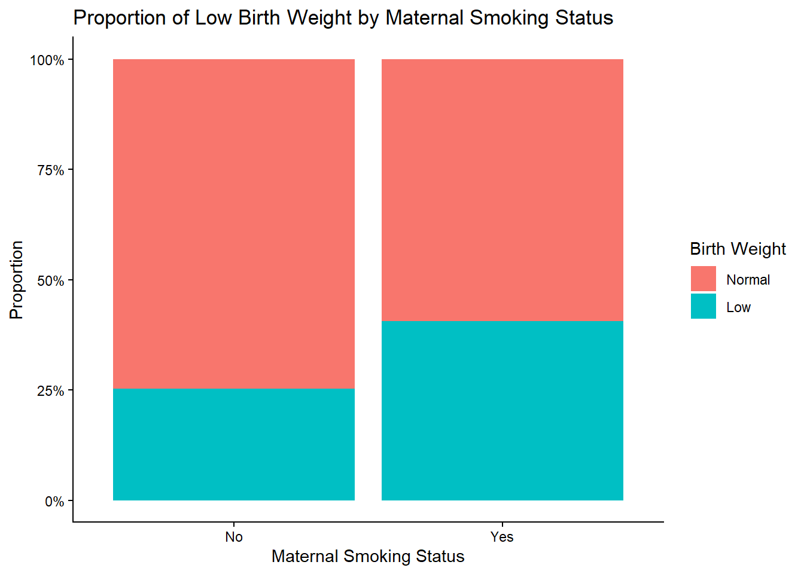

These are just suggested answers. There are many ways to answer these questions.
# ============================================================# LOGISTIC REGRESSION: SOLUTIONS# Work through the tasks in order in your R Project.# Use the birthwt dataset from the MASS package.# ============================================================# SETUP ------------------------------------------------------library(tidyverse)library(MASS)library(gtsummary)# Load the birthwt datasetdata(birthwt)# Create a working datasetbirth_data <- birthwt %>%mutate(low =factor(low, levels =c(0, 1),labels =c("Normal", "Low")),smoke =factor(smoke, levels =c(0, 1),labels =c("No", "Yes")))# Outcome:# low = Low birth weight (less than 2,500 grams)## Predictors:# smoke = Maternal smoking during pregnancy# age = Maternal age in years# lwt = Maternal weight in pounds# PART 1: EXPLORING THE DATA ---------------------------------# TASK 1: Use count() to examine the frequency of low# birth weight. Calculate the percentage of infants# classified as having low birth weight.birth_data %>%count(low) %>%mutate(percent = n /sum(n) *100)
low n percent
1 Normal 130 68.78307
2 Low 59 31.21693
# TASK 2: Using ggplot2, create a proportional bar chart# comparing low birth weight by maternal smoking status.# Include appropriate labels and theme_classic().ggplot(birth_data, aes(x = smoke, fill = low)) +geom_bar(position ="fill") +labs(title ="Proportion of Low Birth Weight by Maternal Smoking Status",x ="Maternal Smoking Status",y ="Proportion",fill ="Birth Weight") +scale_y_continuous(labels = scales::percent_format()) +theme_classic()

# PART 2: SIMPLE LOGISTIC REGRESSION --------------------------# TASK 3: Use glm() to fit a simple logistic regression# model predicting low birth weight from maternal smoking.# Save the model as model_1.# Hint: Use family = binomial.model_1 <-glm(low ~ smoke, data = birth_data, family = binomial)# TASK 4: Use summary() to examine model_1.# Exponentiate the regression coefficients using exp().# Interpret the odds ratio for maternal smoking.summary(model_1)
Call:
glm(formula = low ~ smoke, family = binomial, data = birth_data)
Coefficients:
Estimate Std. Error z value Pr(>|z|)
(Intercept) -1.0871 0.2147 -5.062 4.14e-07 ***
smokeYes 0.7041 0.3196 2.203 0.0276 *
---
Signif. codes: 0 '***' 0.001 '**' 0.01 '*' 0.05 '.' 0.1 ' ' 1
(Dispersion parameter for binomial family taken to be 1)
Null deviance: 234.67 on 188 degrees of freedom
Residual deviance: 229.80 on 187 degrees of freedom
AIC: 233.8
Number of Fisher Scoring iterations: 4
Interpretation: The odds ratio for smoking is approximately 2.0. Mothers who smoked during pregnancy had approximately twice the odds of delivering a low birth weight infant compared with mothers who did not smoke.
# PART 3: MULTIPLE LOGISTIC REGRESSION ------------------------# TASK 5: Fit a multiple logistic regression model# predicting low birth weight from smoke, age, and lwt.# Save the model as model_2.# Examine the results using summary().model_2 <-glm(low ~ smoke + age + lwt, data = birth_data, family = binomial)summary(model_2)
Call:
glm(formula = low ~ smoke + age + lwt, family = binomial, data = birth_data)
Coefficients:
Estimate Std. Error z value Pr(>|z|)
(Intercept) 1.368225 1.014262 1.349 0.1773
smokeYes 0.670764 0.325878 2.058 0.0396 *
age -0.038995 0.032726 -1.192 0.2334
lwt -0.012139 0.006135 -1.979 0.0479 *
---
Signif. codes: 0 '***' 0.001 '**' 0.01 '*' 0.05 '.' 0.1 ' ' 1
(Dispersion parameter for binomial family taken to be 1)
Null deviance: 234.67 on 188 degrees of freedom
Residual deviance: 222.88 on 185 degrees of freedom
AIC: 230.88
Number of Fisher Scoring iterations: 4
# TASK 6: Exponentiate the coefficients from model_2# to obtain adjusted odds ratios.# Compare the odds ratio for smoking between model_1# and model_2. Did the association change after adjustment?round(exp(cbind(OR =coef(model_2), confint.default(model_2))), 2)
Interpretation: Compare the smoking odds ratios between models. The adjusted odds ratio accounts for maternal age and maternal weight. A change in the odds ratio after adjustment may reflect confounding, differences in model specification,or the non-collapsibility of odds ratios.
# PART 4: PRESENTING REGRESSION RESULTS -----------------------# TASK 7: Use gtsummary::tbl_regression() to present model_2# in a formatted table. Include adjusted odds ratios,# and p-values.# Hint: Use exponentiate = TRUE.# Use bold_p() to highlight statistically significant results.library(gtsummary)tbl_regression(model_2, exponentiate =TRUE,label=list(smoke ="Maternal Smoking",age ="Maternal Age",lwt ="Maternal Weight")) %>%bold_p(t=0.05)
Characteristic
OR
95% CI
p-value
Maternal Smoking
No
—
—
Yes
1.96
1.03, 3.72
0.040
Maternal Age
0.96
0.90, 1.02
0.2
Maternal Weight
0.99
0.98, 1.00
0.048
Abbreviations: CI = Confidence Interval, OR = Odds Ratio
Interpretation: The table presents adjusted odds ratios (aOR), 95% confidence intervals, and p-values. Odds ratios greater than 1 indicate higher odds of low birth weight, while odds ratios less than 1 indicate lower odds, holding other variables constant.
# REFLECTION -------------------------------------------------# How does interpreting an odds ratio differ from interpreting# a coefficient in linear regression?# What does an odds ratio greater than 1 indicate?# Write your answers as comments below.
Answer: Linear regression coefficients describe the expected change in a continuous outcome for a one-unit increase in a predictor, holding other predictors constant. Logistic regression odds ratios describe the multiplicative change in the odds of an event for a one-unit increase in a predictor, holding other predictors constant.